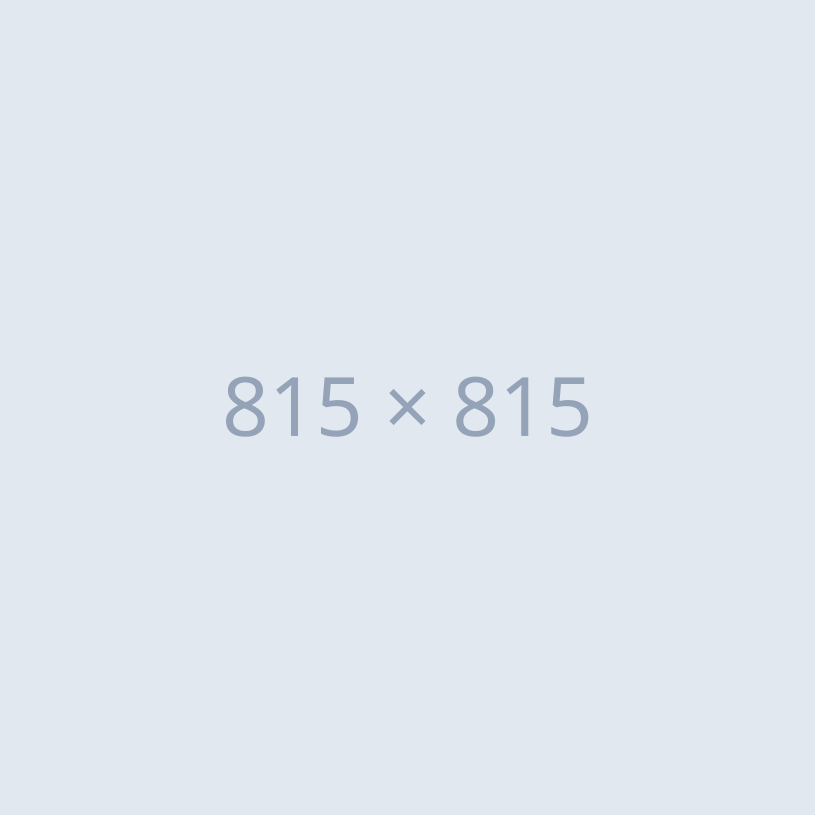
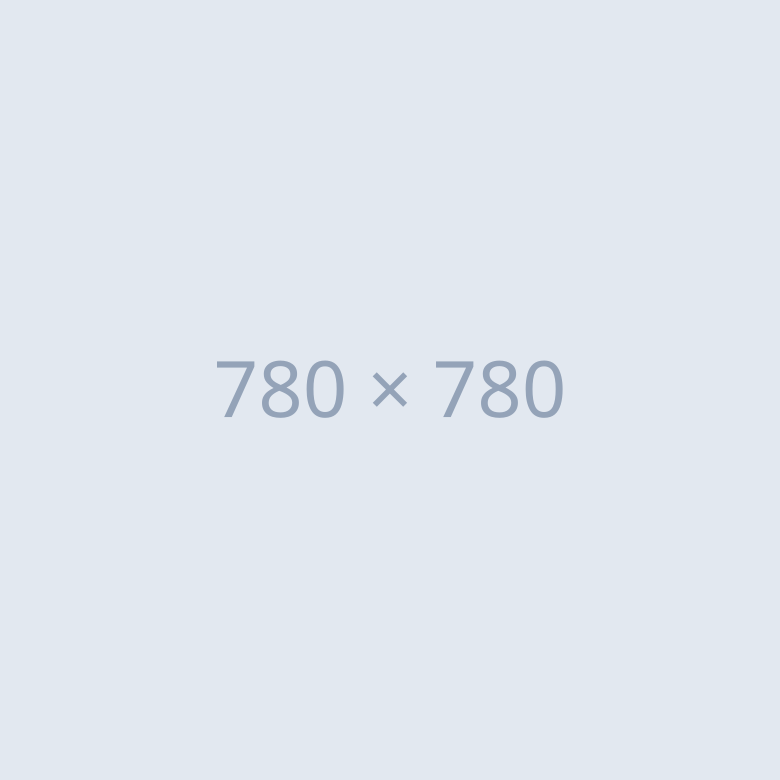

Launch Film0:40 Halo Drift Aurelo2027 Glass simulation, look development, a 40-second launch film01Work
Films, loops and motion systems for brands in nine countries, each one made from the first still to the final grade by one person.
12 Projects12 Clients2023–2027

Launch Film0:40 Halo Drift Aurelo2027 Glass simulation, look development, a 40-second launch film
Product Loop0:12
Soft Machine
Mondra2026
Soft-body simulation, a seamless loop
 Campaign Film0:30
Silk Season
Atelier Fenn2026
Cloth simulation, lighting, a 30-second film
Identity Motion24 Assets
Prism Index
Brightvale2025
A motion system, app and social toolkit
Product Stills12 Frames
Still Water
Verdane2025
Caustics, product stills and one hero loop
Brand Idents6 × 0:08
Liquid Chrome
Kessler Labs2026
Fluid simulation, six event idents
Campaign Film0:30
Silk Season
Atelier Fenn2026
Cloth simulation, lighting, a 30-second film
Identity Motion24 Assets
Prism Index
Brightvale2025
A motion system, app and social toolkit
Product Stills12 Frames
Still Water
Verdane2025
Caustics, product stills and one hero loop
Brand Idents6 × 0:08
Liquid Chrome
Kessler Labs2026
Fluid simulation, six event idents

Campaign Film0:45 Velvet Hours Noctis2025 Velvet cloth simulation over faceted glass, a 45-second film
Product Loop0:10
Pressure Point
Tonwerk2025
A speaker cone that breathes, a ten-second loop
Launch Film0:35
Quiet Bloom
Orvo2024
A glass flower opening, a 35-second launch film
Identity Motion18 Assets
Fold Line
Papiro2024
Paper folding rules for a stationery brand
Product Stills10 Frames
Slow Heat
Brasa2023
Enamel, steam and ember light, ten stills
Brand Idents8 × 0:06
Signal Set
Northgrid2023
Glass nodes joined by light, eight idents
Ask for the private reel: three minutes of unreleased work, sent as a password-protected link that expires after a week.
Trusted by brand teams in Berlin, London & New York
Booking From February 2027
Tell me what you are launching and when. You will hear back within two working days with a first idea and an honest timeline.
Next Six MonthsOpenBooked